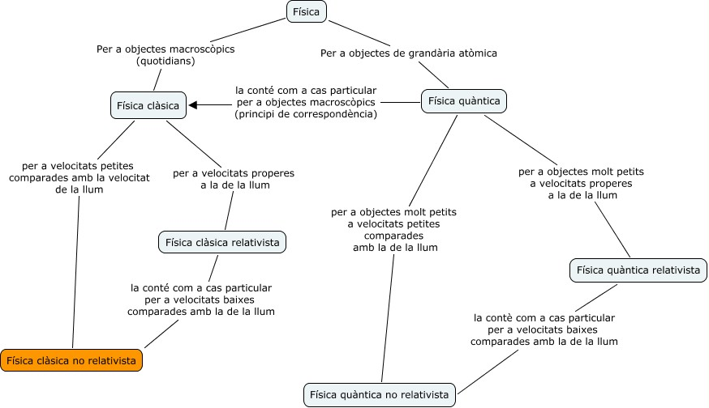

Introducció a la Física
Què és la ciència?
Les ciències naturals, també anomenades ciències experimentals o directament ciéncia és el conjunt de coneixements que tracten de descriure el funcionament de la natura trobant un cert ordre i les seves causes. La ciència ès una activitat humana amb esforços col·lectius de recerca amb la finalitat de descobrir fets, establir relacions entre ells i enunciar lleis i teories demostrables que permetin una descripció senzilla sobre el funcionament de la natura.
La ciència és tan antiga com l’ésser humá. Des d’abans que l’home sàpiga escriure ja es van trobar regularitats en el clima o sobre les posicions de les estrelles entre d’altres. A partir d’aquestes regularitats s’han pogut fer prediccions i tenir un cert control sobre l’entorn.
El llenguatge de la ciència son les matemàtiques i una de les particularitats mès importants de la ciència és la mesura. L’èxit en el coneixement d’un fenomen natural està relacionat amb la possibilitat de mesurar-ho. El físic del segle XIX, Lord Kelvin, ho va dir de la següent manera: “Quan pots mesurar això del que parles, i expressar-ho en números, saps alguna cosa d’això; però quan no ho pots mesurar, quan no ho pots expressar en números, el teu coneixement es pobre i insatisfactori: pot ser el principi d’un coneixement, però els teus pensaments han avançat poc cap a l’estat de Ciència, sigui la disciplina que sigui”.
Des que les ciències naturals van incorporar les matemàtiques com a llenguatge per a expressar les seves teories, fa més o menys quatre segles, el desenvolupament científic va ser espectacular. El poder expressar les idees en termes matemàtics fa que els conceptes siguin ben concrets, sense ambigüitats. D’aquesta manera s’elimina la confusió que sempre por haver-hi quan les coses s’expliquen en llenguatge quotidià. Si les idees s’expressen matemàticament resulta més fàcil realitzar experiments que permetin confirmar o rebutjar aquestes idees.
El mètode científic
L’éxit que ha tingut la ciéncia, sobre tot, en els últims quatre-cents anys, ha estat associat a una metodologia que la caracteritza i que s’anomena el métode científic. El métode científic va ser creat, fonamentalment, pel físic italià Galileu Galilei i pel filòsof anglès Francis Bacon i consisteix en la consecució dels següents passos:
-
Observar un fenomen o situació problemàtica. Quan diem observar en ciència volem dir també mesurar les magnituds rellevants associades a aquest fenomen de manera que ens permetin enregistrar els aspectes més importants d’aixó que observem.
-
Realitzar una hipòtesi a partir de l’anàlisi del fenomen observat. Aixó vol dir trobar una relació entre les magnituds mesurades. Aquesta hipòtesi ha de tenir la propietat de poder predir resultats en situacions en les que encara no s’han fet observacions o mesuraments. Una característica important d’una hipòtesi científica és que també ha de poder predir quines conseqüències es deriven si la hipòtesi resulta falsa.
-
Fer els experiments necessaris per a comprovar si les prediccions de la hipòtesi són encertades.
-
Fer la formulació d’una regla senzilla que permeti organitzar la hipòtesi amb els efectes predits i les determinacions experimentals.
La ciència ès una disciplina humana i està associada al desenvolupament de la societat en determinat moment històric. Fets indiscutibles d’una època (com ser que la Terra roman immòbil) poden ser poden ser clarament falsos en una altre època. Això succeeix perquè quan es fa la interpretació d’una observació sempre donem per suposats moltes coses que estan associades a les creences de l’època en que vivim. Habitualment l’evolució de la ciència arriba a un punt en que s’han acumulat una quantitat important de fets observats que estan en contradicció amb les creences de l’època, aixó produeix una crisi. La crisi és superada quan s’abandonen aquestes creences i s’estableixen altres noves que permeten explicar els fets observats. Es diu que s’ha adoptat un nou paradigma. La ciència evoluciona d’aquesta manera.
Una teoria científica ha de ser falsable
Una de les condicions que ha de tenir una teoria o llei per a ser considerada científica és que sigui falsable. Això vol dir que la teoria ha de permetre que es puguin dissenyar experiments destinats a demostrar que la teoria pot ser falsa. Mai podrem dir que una teoria científica és certa, el màxim al que podem aspirar és a dir que és la que millor descriu el fenòmens observats, però basta que hi hagi un únic exemple on la teoria falla per a dir que la teoria no és certa (encara que podem conservar-la perquè és la millor candidata que hi tenim).
Si una teoria està blindada davant la possibilitat de demostrar la seva falsedat, no podem dir que és una teoria científica. Podem considerar a totes les religions dintre d’aquest cas.
La actitud científica a la vida quotidiana
Podem adoptar una actitud científica al nostre comportament quotidià encara que no siguem científics. Això vol dir tenir una actitud escèptica davant les afirmacions fetes pels altres. Què vol dir això? Senzillament que no ens hem de creure tot el que ens diuen només perquè el que fa l’afirmació es una persona important o amb més experiència. Hem de conèixer altres opinions i confrontar-les abans d’adoptar una posició. Encara que ens sembli que tenir una actitud escèptica en una societat tècnicament desenvolupada com la nostra hauria de ser el més normal, no és així. Molta gent creu sense més ni més ho que els anuncis de TV diuen o el que li recomana el seu veí. Un cas dramàtic ha estat la guerra de l’Iraq. Moltíssima gent ha donat suport a la guerra donant per veritat l’afirmació de que estava en possessió d’armes de destrucció massiva sense demanar proves. Després es va demostrar que havien estat mentides inventades per justificar una invasió amb finalitats econòmiques. La irracionalitat es molt freqüent a la nostra societat, la creença en cures miraculoses o el caure en fraus econòmics està a l’ordre del dia. El tenir una actitud escèptica ens pot ajudar a no caure en enganys.
Què estudia la física?
La física és una ciència bàsica i està en el rerefons de totes les ciències naturals ja que qualsevol fenomen natural, encara que siguin processos biològics es basen en interaccions de massa i energia que són l’objecte d’estudi de la física. Antigament la ciència era coneguda amb el nom de filosofia natural i abastava totes les ciències naturals. Després es va separar en ciències físiques (física, química, geologia i astronomia) i ciències de la vida (biologia, zoologia, botànica), que van tenir durant bastant temps objectes d’estudi ben diferenciats. Actualment s’està tornant a tenir una visió globalitzadora de la ciència i els estudis interdisciplinaris són els que estan donant més fruits en aquests moments com ser la nanotecnologia (física, química i enginyeria) i la biologia molecular (biologia, física i química).
L’objecte d’estudi de la física és fonamentalment la matèria i les radiacions, les interaccions i el moviment. En aquest curs estudiarem el moviment (cinemàtica) i les interaccions que donen origen al moviment (dinàmica). També estudiarem algunes magnituds físiques interessants que romanen invariables durant les interaccions (energia i quantitat de moviment) i que ens permetran predir comportaments de la matèria d’una manera senzilla i bella. Estudiarem una propietat física anomenada càrrega elèctrica i les seves interaccions. També estudiarem com interactuen les partícules que formen part del nucli atòmic i la nova visió de l’univers que s’ha obert a partir de les teories de la relativitat d’Einstein i la mecànica quàntica.
Dintre de la física, tenim diferents teories que resulten més adequades segons quin és el nostre sistema sota estudi. En el mapa conceptual que apareix a sota podem veure les diferents teories físiques i el seu camp d’aplicació més adequat. La major part de la fisica que estudiarem en aquest curs està indicada amb color taronja, tot i que també veurem alguns aspectes de teories de la relativitat i quàntica . Encara que pot semblar que estudiarem una part molt petita de la física és necessari dir que és aquesta part la que té aplicacions al nostre món macroscòpic i a velocitats “quotidianes”.

Perspectives de la física
“Llegará una época en la que una investigación diligente y prolongada sacará a la luz cosas que hoy están ocultas. La vida de una sola persona, aunque estuviera toda ella dedicada al cielo, sería insuficiente para investigar una materia tan vasta… Por lo tanto este conocimiento sólo se podrá desarrollar a lo largo de sucesivas edades. Llegará una época en la que nuestros descendientes se asombrarán de que ignoráramos cosas que para ellos son tan claras… Muchos son los descubrimientos reservados para las épocas futuras, cuando se haya borrado el recuerdo de nosotros. Nuestro universo sería una cosa muy limitada si no ofreciera a cada época algo que investigar… La naturaleza no revela sus misterios de una vez para siempre”. SÉNECA, Cuestiones Naturales, libro 7, siglo I
Durant el segle passat es van desenvolupar teories com la de la relativitat, la teoria quàntica, el model estàndard de partícules i la teoria estàndard del big-bang que han estat una autèntica revolució en el coneixement científic.
Probablement el punt pendent de la física és la troballa d’una teoria del tot. Una teoria que permeti englobar en un mateix formalisme totes les interaccions conegudes. Això vol dir poder trobar un teoria que permeti unificar la teoria quàntica i la teoria de la gravitació (relativitat general). Els esforços dedicats a aquesta empresa han desenvolupat una teoria encara en construcció anomenada teoria de supercordes, la hipòtesi fonamental de la qual es basa és que les entitats fonamentals que formen el món fisic no són partícules sinò cordes de dimensions $10^{20}$ vegades més petites que els àtoms. El problema que presenta aquesta teoria és que les seves prediccions encara no s’han pogut demostrar perquè la verificació experimental d’aquesta teoria necessita d’energies cada vegada més grans. Els experiments que es faran en el Gran Col·lisionador d’Hadrons LHC de Ginebra, potser ajudarà a confirmar o desmentir algunes de les prediccions d’aquesta teoria.
Altre dels problemes actuals de la física està lligat amb una qüestió de gran importància per a la humanitat com ser l’obtenció d’energia de forma sostenible. La possibilitat d’obtenir energia per fusió nuclear controlada és uns dels objectius fonamentals en aquest sentit. La construcció del reactor de fusió europeu ITER permetrà avançar en aquest camí.
En el camp de l’astrofísica s’estan fent descobriments a diari gràcies a la incorporació de noves tècniques d’observació i experimentació. Queden pendents d’explicació la matèria fosca i l’energia fosca que encara no sabem què són i que semblen ser necessaries per poder explicar l’acceleració en l’expansió de l’univers.
La superconductivitat a altes temperatures es una altre àmbit de la física que encara necessita d’una teoria que doni una explicació satisfactòria al seu mecanisme.
Altres camps prometedors són: la computació quàntica (utilització de sistemes quàntics per al càlcul i l’emmagatzematge d’informació) i la nanociència (comportament de la matèria a escala nanométrica).
Magnituds físiques
Si hi ha alguna cosa que caracteritza la física i totes les ciències experimentals és la necessitat de fer mesuraments, ja que necessiten tenir a la natura com a jutge de les seves teories.
Les magnituds físiques són propietats dels cossos, d’un fenomen o d’una substància susceptible de ser mesurada d’una manera directa o indirecta. Exemples de magnituds són la longitud, els temps o la massa.
Sempre que mesurem alguna magnitud estem comparant amb un valor que ens serveix de patró i que defineix la unitat de mesura, per exemple quan mesurem una longitud ho fem adoptant com a patró el metre i el que fem és comparar la longitud del que mesurem amb aquesta metre patró. D’aquesta manera una magnitud física consta de dues parts: una quantitat i una unitat. La quantitat ens dóna el resultat de la comparació i la unitat ens diu contra què estem comparant.
Hi ha unitats a les quals anomenem fonamentals i d’altres que anomenem derivades i al conjunt d’unitats que utilitzem l’anomenem sistema d’unitats. El sistema d’unitats que fem servir a tot el món és el Sistema Internacional (SI). Aquest sistema no és pas l’únic però és el que fa servir tota la comunitat científica actualment
Errors de mesurament
Sempre que mesurem donem un resultat aproximat de la magnitud mesurada degut a les limitacions pròpies del procés de mesura com a conseqüència de:
-
La sensibilitat i exactitud dels instruments utilitzats.
-
La interacció del mètode de mesura amb el que volem mesurar.
-
La definició de l’objecte a mesurar.
-
La influència de l’observador que fa la mesura.
Tot això porta a que tota mesura tingui un error associat a la mesura. Moltes vegades fem servir el terme error com a sinònim d’equivocació però en aquest cas l’hem d’entendre com a sinònim d’incertesa. El que volem fer quan mesurem es establir unes cotes o límits probabilístics a aquestes incerteses. Busquem establir un interval:
per a la nostra magnitud mesurada $x$, on $\bar{x}$ és el valor més probable (mitjana) que hem trobat i $\Delta x$ és l’error absolut de la mesura. L’interval $(\bar{x}-\Delta x,x+\Delta x)$ s’anomena interval de confiança de la mesura.
La manera que tenim d’expressar el valor de la magnitud amb el seu error de mesura és la següent:
com per exemple:
Error relatiu
L’error absolut ens dóna l’interval de confiança d’una mesura però no ens serveix per a comparar la nostra mesura amb altres. Per exemple, si mesurem el temps de caiguda d’una pilota i obtenim $(1,4 \pm 0,2)\mathrm{s}$ i, per l’altra banda mesurem el temps de viatge del metro des d’una estació a l’altre i ens dona $(140\pm0,2)\mathrm{s}$, no podrem dir que les dues mesures tenen la mateixa qualitat perquè tenen el mateix error absolut, ja que una de les mesures és 100 vegades més gran que l’altre i té el mateix error. La mesura del temps del metro té 100 vegades més qualitat. Si volem tenir idea de la qualitat de la nostra mesura resulta més útil el concepte d’error relatiu, que es defineix com el quocient entre l’error absolut i el valor de la mesura:
L’error absolut no porta unitats, és una magnitud adimensional. En el cas de tenir que l’error absolut és igual al valor mesura, l’error relatiu tindria un valor d’1. Una altra manera d’expressar l’error relatiu és fer-lo amb percentatges, en aquest cas tenir l’error percentual:
Un error relatiu de 0,02 correspon a un error del 2%.
Classificació dels errors
Els errors de mesurament es poden classificar de diferents maneres:
-
Errors sistemàtics: El seu origen es troba en imperfeccions del mètode de mesurament. Per exemple: un rellotge que endarrereix o que avança, un regle que està dilatat, error de paral·laxi, etc. Els errors introduïts d’aquesta manera sempre afecten els resultats en un mateix sentit.
-
Errors aleatoris o estadístics: Són els que es produeixen a l’atzar. En general són deguts a causes múltiples i fortuïtes. Aquests error es poden produir amb igual probabilitat tant per excés com per defecte. Per tant, mesurant varies vegades i prenent la mitjana dels valors mesurats es poden reduir considerablement.
-
Errors il·legítims o espuris: Són els que cometem per equivocació o deixadesa. Si podem fer varies mesures i un dels valors mesurats s’aparta molt de la resta podem considerar que aquest valor és espuri i descartar-lo.
Sensibilitat, precisió i exactitud
La sensibilitat d’un instrument o un mètode de mesurament està associada a la menor variació de la magnitud que pot ser detectada per l’instrument o mètode.D’aquesta manera podem dir que un peu de rei (amb una apreciació nominal de 0,1 mm) és més sensible que un regle graduada en mil·límetres.
Quan parlem de la precisió d’un conjunt de mesures d’una magnitud fem referència a la dispersió que presenten els valors mesurats. La precisió d’una sèrie de mesures està associada a la repetitivitat, és a dir que moltes mesures del mateix mesurant dóna resultats semblants.
L’exactitud d’un instrument o mètode de mesurament està associat a la qualitat de la cal·libració que s’hagi fet d’aquest respecte al patró estàndard (quilogram patró, metre patró, etc.). Quan parlem d’exactitud d’un conjunt de mesures estem fent referència a quant s’apropa o desvia el valor mig d’aquests valors al millor valor o “valor real”.
Determinació dels errors de mesurament
Mesura única: En el cas de tenir una única mesura d’una magnitud adoptarem coma criteri d’estimació de l’error la mínima divisió de l’instrument o mètode de mesura. Per exemple, si mesurem una distància de 25 cm amb un regle graduat en mil·límetres, donarem el resultat així: $(250\pm1)\,\mathrm{mm}$ o, equivalentment, $(25,0\pm0,1)\,\mathrm{cm}$.
Mesura repetitiva: Moltes vegades podem fer moltes mesures d’una mateixa magnitud i en aquest cas determinarem el valor de la nostra mesura com la mitjana del valors mesurats i adoptarem com a criteri per a estimar l’error la distància entre el valor de la mitjana i el valor individual que més lluny es troba d’aquesta. Per exemple, suposarem que hem fet varies mesures del període d’oscil·lació d’un pèndol i obtenim els valors següents: 0,98 s; 1,01 s; 1,00 s; 1,01 s i 0,99 s. El valor de la mitjana serà 0,998 s. La distància entre la mitjana i els valors extrems són: $d_{1}=\lvert 0,998-0,98 \rvert=0,018\,\mathrm{s}$ i $d_{2}=\lvert 0,998-1,01\rvert = 0,012\, \mathrm{s}$. En aquest cas veiem que la distància $d_{1}$ és la més gran i aleshores l’agafarem com a estimació de l’error. La nostra mesura serà doncs: $x=(1,00\pm0,02)\,\mathrm{s}$. Per què no hem posat $x=(0,998\pm0,018)\,\mathrm{s}$? Això ho veurem a continuació.
Xifres significatives
$-$ Soldat, quant enemics ha vist?
$-$ Cinc mil u, coronel!
$-$ Com és que ho sap amb tanta certesa?
$-$ Perquè venia un endavant i com cinc mil darrere seu!
Aquest diàleg tan ridícul ens pot ajudar a entendre el concepte de xifra significativa. Té sentit precisar dient cinc mil u, quan no tenim certesa dels cinc mil que venen al darrere? No té sentit. En aquest cas, més o menys cinc mil més u continua sent més o menys cinc mil.
El resultat d’un mesurament expressat de la forma $\bar{x}\pm\Delta x$, ha de ser consistent respecte al nombre de xifres que s’informen pel valor d’$\bar{x}$ i de la seva incertesa $\Delta x$. Això té a veure amb el nombre de xifres significatives que incloguem en cadascuna d’elles.
Considerem la mesura feta a l’apartat anterior, en aquest cas teníem que el nostre resultat ens donava $x=(0,998\pm0,018)\,\mathrm{s}$. Però, si ens fixem bé, tenim incertesa al segon decimal i no té massa sentit donar un resultat amb més xifres que les que arriben fins al segon decimal, per tant, podem escriure l’error arrodonint fins al segon decimal: $\Delta x=0,02\,\mathrm{s}$. De la mateixa manera hem d’arrodonir el resultat fins al segon decimal, així $\bar{x}=1,00\,\mathrm{s}$. Recordem que per a arrodonir el que fem és sumar una unitat a l’última xifra que donem si la xifra que seguia era igual o més gran que cinc i no sumar res si la xifra que seguia era més petita que cinc.
En aquest cas donem el resultat
i diem que el nostre resultat té 3 xifres significatives. El primer dígit (l’1) és el més significatiu i l’últim zero el menys significatiu, ja que és en aquest dígit on tenim la incertesa. Moltes vegades donem el resultat d’una mesura sense donar la seva incertesa, per exemple
En aquest cas s’entén que l’error es troba al segon decimal i que els dos zeros són significatius. El que no té sentit és expressar un resultat de la següent manera:
ja que no té sentit donar un resultat amb 5 decimals quan ja no estem del tot segurs del segon decimal. Els tres últims no s’han de posar.
Una possible ambigüitat pot aparèixer quan fem un canvi d’unitats. Per exemple, si volem expressar una longitud $L=(32\pm1)\,\mathrm{mm}$ en $\mu\mathrm{m}$. Quantes xifres significatives hauria de tenir el resultat després del canvi d’unitats? Si escrivim $L=32000\mu\mathrm{m}$, haurem incrementat el nombre de xifres significatives de dos a cinc, donant la impressió de que hem mesurat amb un instrument que aprecia fins a la micra, la qual cosa no és certa.
Per a evitar aquesta ambigüitat es fa servir la notació científica. Amb el seu ús, la conversió de valor implica només la transformació de la unitat, conservant el nombre de xifres significatives del valor original. Així:
En efecte, $32\,\mathrm{mm}$ i $3,2\times10^{4}\mu\mathrm{m}$ tenen el mateix nombre de xifres significatives. L’error d’$1\,\mathrm{mm}$ s’ha escrit com $0,1\times10^{4}\mathrm{\mu m}$, amb una sola xifra significativa en ambdós casos.
Com saber quantes xifres significatives te un valor donat? Podem seguir les següents regles:
-
Els zeros a l’esquerra no són significatius: Per tant, el nombre 103 té tres xifres significatives a l’igual que 0,00000103. Això es deu a que els zeros a l’esquerra no afegeixen precisió a una mesura, sinó que només serveixen per a establir la posició de la coma decimal. Ja hem vist que la millor manera de treballar en aquests casos és utilitzar la notació científica. En aquest cas el primer valor s’expressa com $1,03\times10^{2}$ i el segon com $1,03\times10^{-6}$ on queda clar en ambdós casos que tenim tres xifres significatives. La regla podria ser la següent: per a comptar xifres significatives es comença amb el primer dígit diferent a zero i es compten tots els dígits a a partir d’aquest.
-
Els zeros a la dreta sí són significatius: Això és molt important: els zeros a la dreta s’han d’escriure si i només si són una part vertadera de la mesura. Per tant, no és el mateix dir que una cosa té una massa d’1 kg que dir que té una massa d’1,00 kg. La primera mida implica que la mesura s’ha fet amb una balança graduada en kg. La segona mesura ha estat feta amb una balança graduada en centèsimes de kg, es a dir en grams. La segona mesura és cent vegades més precisa que la primera, la primera té una xifra significativa i la segona té tres xifres significatives. Per exemple, en una balança analítica que té una precisió de deumil·lèsima de gram, si la balança marca 0,5700 g és necessari registrar el valor amb els dos zeros a la dreta, i no com 0,57 g. En canvi, a vegades hem de tenir cura amb els zeros a la dreta. Per això està la següent regla.
-
Els zeros a la dreta no són significatius quan la seva funció és només la d’especificar la posició del punt decimal: Per exemple, si diem que el Sol està a una distància de 150 000 000 000 m, Quantes xifres significatives hi ha? Certament no són dotze, perquè això voldria dir que es coneix la distància amb una precisió de l’ordre d’1 m. A més a més de que és una precisió impossible a la pràctica, seria massa coincidència que tal mesura tingui tants zeros, oi? Però podria passar que el primer zero o, fins i tot el segon, fossin significatius. De la manera que estan escrits no hi ha manera de saber-ho. La única manera d’evitar aquesta ambigüitat és fent servir la notació científica. Si ens diuen que el Sol està a $1,50\times10^{11}\mathrm{m}$, podem assegurar, sense cap dubte, que només el primer zero és significatiu i, per tant, n’hi ha tres xifres significatives.
-
Els nombres que són enters per naturalesa es consideren com si tinguessin un nombre infinit de xifres significatives: Es a dir, els nombres enters per naturalesa es coneixen amb una exactitud perfecta. Per exemple, en electroquímica hi ha una equació que diu: $\Delta G=nF\Delta E$. Sense entrar en més detalls, tindrem prou en saber que $n$ és el nombre d’electrons intercanviats en una reacció redox. Posem d’exemple, la reacció $\mathrm{Cu_{2}+2Zn\rightleftharpoons2Cu+Zn_{2}}$. Aquí s’intercanvien dos electrons i no hi ha cap incertesa al respecte. Per tant, per a determinar el nombre de xifres significatives del resultat final, no s’ha de tenir en compte la precisió d’$n$ . El podem veure com si $n$ fos igual a 2,00000000000000000…
-
Els factors de conversió generalment són exactes: Es a dir, a l’igual que amb els nombres enters, es pot considerar que tenen un nombre infinit de xifres significatives. Encara que hi ha algunes conversions que no són exactes perquè estan determinades empíricament, altes són exactes. Per exemple, una polzada és exactament igual a 2,54 cm per definició, i una caloria són 4,184 J. Totes les conversions dintre d’un mateix sistema són exactes (1 km és exactament igual a 1000 m, i 1 peu és exactament igual a 12 polzades).
Operacions amb xifres significatives
Ara veurem com es decideix quantes xifres significatives té el resultat d’una operació matemàtica.
-
En una multiplicació o divisió, ens hem de quedar amb el nombre de xifres significatives del factor menys precís: Per exemple $1,5+3,14159265359=4,7$. No importa que la calculadora digui $4,64159265359$. El resultat té només dues xifres significatives i s’ha de reportar com $4,7$. No hem d’oblidar que hem d’arrodonir l’últim dígit: per exemple $10,0/1,5=6,7$, encara que la calculadora ens digui $6,66666666$.
-
En una suma o resta, s’han d’alinear els punts decimals i ens quedem amb la precisió del nombre que tingui menys xifres després de la coma decimal: Veiem alguns exemples. $1,44+2,35\times10^{-5}=1,44$. Encara que la calculadora digui $1,4400235$, el segon sumant és menyspreable amb respecte al primer, per tant no afecta a la suma. Per a que quedi clar què volem dir amb això d’alinear la coma decimal, hem de veure la suma de la següent manera:
| 1,44 | (dues xifres després de la coma) | |
| + | 0,0000235 | (set xifres després de la coma, però només 3 significatives) |
| 1,44 | (s'agafen només dues després de la coma) |
Un altre exemple: $37,59-8,3=45,9$ (la calculadora dóna 45,89, no hem d’oblidar-nos d’arrodonir-ne).
| 37,59 | (dues xifres després de la coma) | |
| + | 8,3 | (una xifra després de la coma) |
| 45,9 | (una xifra després de la coma) |
Amb les restes s’ha de tenir especial cura, ja que dos nombres amb moltes xifres significatives però valors molt semblants poden donar un resultat amb molt poques xifres significatives. Per exemple $125,890657-125,890643=1,4\times10^{-5}$.
| 125,890657 | (sis xifres després de la coma) | |
| - | 125,890643 | (sis xifres després de la coma) |
| 0,000014 | (sis xifres després de la coma, però només dues de significatives) |
Com últim exemple, no oblidem que en el resultat poden quedar zeros a la dreta. Per exemple: $5,57-2,372=3,20$ (la calculadora ens dóna $3,198$).
-
Els resultats intermedis convé guardar-los amb totes les seves xifres o, al menys, amb una xifra no significativa: Les xifres significatives s’han de tenir en compte per a reportar el resultat final d’una operació amb una precisió realista, en canvi, en els resultats intermedis convé guardar més xifres significatives perquè amb cada arrodoniment que es fa es va perdent precisió. Si la cadena d’operacions és molt llarga aquests petits errors es van acumulant fins fer-se significatius. Si cal reportar resultats intermedis s’han de reportar amb les seves xifres significatives però, també l’hem d’apuntar amb tots les xifres en el full d’operacions (o en la memòria de la calculadora) per al seu ús en els càlculs posteriors.
-
Per a operacions combinades s’ha de fer un anàlisi pas a pas: Anem a veure un exemple complicat:
-
$5,4356-11,29=61,36\underline{7924}$. Els nombres subratllats són xifres no significatives que es guarden per a les següents operacions.
-
$61,36\underline{7924}-12,7=48,6\underline{67924}$
-
$48,6\underline{67924}/4,4=11,0\underline{608918182}$
-
$11,0\underline{608918182}+1,6456=12,7\underline{064918182}$. Per tant, el valor que hem de reportar finalment és $12,7$.
- Per a operacions com arrels quadrades, potències, logaritmes i exponencials no hi ha regles senzilles Com a primera aproximació es poden fer servir les mateixes regles que per a la multiplicació i la divisió, només hem de recordar que elevar un nombre al quadrat o al cub estem fent multiplicacions.